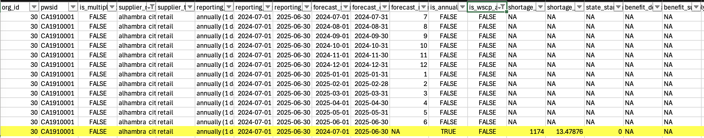

# load in libraries
library(tidyverse)
library(here)
library(testthat)
library(janitor)
library(gt)
# load in data
actual_water_shortage_level <- read_csv(here("data", "actual_water_shortage_level.csv"))
five_year_shortage <- read_csv(here("data", "five_year_water_shortage_outlook.csv"))
historical_production_delivery <- read_csv(here("data", "historical_production_delivery.csv"))
monthly_water_shortage_outlook <- read_csv(here("data", "monthly_water_shortage_outlook.csv"))
source_name <- read_csv(here("data", "source_name.csv"))Main Gap Analysis
Introduction
This document is here to provide discrepancies in the data located on the California Natural Resource Agency’s website. The California Water Data Consortium, in partnership with the Department of Water Resources (DWR) and the State Water Resources and Control Board aim to improve urban water supplier data’s accessibility and usability. In conjunction with UCSB’s Bren School’s Master of Environmental Data Science CalDrought Capstone Team, we aim to provide a full synthesis of the following data, providing a contextualized breakdown as well as written code for checking said breakdown. This document is broken down into five main categories representing the five main data sets used in this project. The five main data sets are as follows: Actual Water Shortage Level, Five Year Water Shortage Outlook, Historical Production and Delivery, Monthly Water Shortage Outlook, and Source Name.
Within Datasets
Actual Water Shortage Level
This dataset reports the monthly state standard shortage level by urban retail water suppliers, which are generally defined as agencies serving over 3,000 service connections or deliveries 3,000 acre-feet of water annually for municipal purposes. These data are collected by the State Water Resources Control Board through its monthly Conservation Reporting and the data included in this dataset represent a small component of the larger dataset. Information about these reports can be found on the Water Conservation Portal, which is no longer active, and the full data (which represents the source data for this dataset) are available on the California Open Data Portal. Beginning in 2023, the reporting of these data transitioned to the SAFER Clearinghouse.
Data use limitations: Prior to 2022, shortage levels were not standardized, which makes the data difficult to use. This dataset was filtered to include 2022 onwards where shortage levels are standardized.
Issue 1: Date Limitation
Our actual shortage data is limited to only WY 2022, 2023, and half of 2024. We are limited 31 months worth of data starting Jan 01, 2022 - July 31, 2024.
Start Dates
# Get unique start_date values
all_start_dates <- actual_water_shortage_level |>
distinct(start_date) |>
arrange(start_date)
print(all_start_dates)# A tibble: 31 × 1
start_date
<date>
1 2022-01-01
2 2022-02-01
3 2022-03-01
4 2022-04-01
5 2022-05-01
6 2022-06-01
7 2022-07-01
8 2022-08-01
9 2022-09-01
10 2022-10-01
# ℹ 21 more rowsEnd Dates
# Get unique end_date values
all_end_dates <- actual_water_shortage_level |>
distinct(end_date) |>
arrange(end_date)
print(all_end_dates)# A tibble: 31 × 1
end_date
<date>
1 2022-01-31
2 2022-02-28
3 2022-03-31
4 2022-04-30
5 2022-05-31
6 2022-06-30
7 2022-07-31
8 2022-08-31
9 2022-09-30
10 2022-10-31
# ℹ 21 more rowsThere are 31 observations and 31 months between the first/last start and end dates.
First Start_date: 01/01/2022, Last Start_date: 07/01/2024
First End_date: 01/31/2022, Last End_date: 07/31/2024
Solution 1
None. More Consistent Data Collection.
Issue 2: Given our data is qualitative and was most recently standardized
As of Jan 01, 2022. Although we do not directly have access to data before WY 2022. Though due to inconsistencies in adopting the standard we can notice that although we have observations for the first 2 months all of our locations have NA values. Whether that’s due to the districts not reporting it or whether it wasn’t translatable to our new standard is unclear.
# Count of NA's by start_date.
actual_water_shortage_level |>
group_by(start_date) |>
summarise(
na_count = sum(is.na(state_standard_shortage_level)),
unique_orgs = n_distinct(org_id)
) |>
head(2)# A tibble: 2 × 3
start_date na_count unique_orgs
<date> <int> <int>
1 2022-01-01 400 400
2 2022-02-01 393 393Solution 2
None. Maintain the standard for future data additions.
Five Year Water Shortage Outlook
This table provides anticipated annual potable water levels (both surplus and shortage) with shortage actions and without shortage actions for five years based on the five driest consecutive years on record. The Urban Water Management Plans (UWMP) reports this data. All data reported through the UWMP are currently available on the WUE portal and the California Natural Resources Open Data Portal. The most recent UWMP guidance is available here. See 7-20 through 7-34 for information about the data elements contained in the five_year_outlook table.
The most important metrics for this dataframe are as follows: water_use_acre_feet, water_supplies_acre_feet, benefit_supply_augmentation_acre_feet, and benefit_demand_reduction_acre_feet. These variables represent, for a given year, total water use, total water supply, total supply augmentation (buying from another water district), and total demand reduction (policies in place to reduce water use) for specific water districts. As explained above, this dataset has self reported metrics from each local water district based on their five driest consecutive years on record.
Data use limitations: Similar to the monthly_water_shortage_outlook data, these data also reflect forecasted values rather than actual values. These data are expected to change as conditions change.
Issue 1: total water use is less to the total water supply
As mentioned above, there are four metrics that we are interested in for this dataset. These four variables combined make up how much water a water district has available and is using. In many such cases the total water use is less than or equal to the total water supply. This indicates that a water district has a surplus of water. However, in the other case, where total water use is greater than total water supply, it must mean that the water district is either augmenting their water supply or reducing their water consumption. Thus, total water use should equal total water supply + total benefit augmentation + total demand reduction.
To find the rows where this doesn’t hold true, let’s assume that NA values for supply_augmentation and demand_reduction are 0s. Let’s use this logic to find water districts that have misreported data.
# Replacing NAs with 0s, assuming this as true
five_year_replace_na <- five_year_shortage %>%
# Mutate existing columns and replace NAs with 0s
mutate(benefit_supply_augmentation_acre_feet =
replace_na(benefit_supply_augmentation_acre_feet, 0),
benefit_demand_reduction_acre_feet =
replace_na(benefit_demand_reduction_acre_feet, 0))
# Creating a function that calculates supply + demand red + supply aug when Use > Supply
calculate_benefit <- function(df) {
five_year_replace_na %>%
# Create new columns
mutate(total_benefit = ifelse(
# Use ifelse statement for when use > supply
water_use_acre_feet > water_supplies_acre_feet,
# If true, then do the following, If false, assign a 0
water_supplies_acre_feet + benefit_demand_reduction_acre_feet + benefit_supply_augmentation_acre_feet, 0
))
}
# Use the function to reassign the df
five_year_replace_na <- calculate_benefit(five_year_replace_na)
# Let's view the data where total_benefit does not equal total use
five_year_na_filtered <- five_year_replace_na %>%
filter(total_benefit != 0,
water_use_acre_feet != total_benefit)Solution 1
From this output, we can see the local water districts that have areas of error. Similar to the first issue, there are no proper data science solutions to fix this problem, as it stems for the initial self-reporting from water districts.
Issue 2: Messy output
One smaller issue unrelated to the integrity of the data is the output in the supplier_name column. The outputs are a bit messy and need to be tampered with a little for effective function plot and table output
five_year_shortage_name <- five_year_shortage %>%
# Changing position of city of to be behind the city name
# ([a-zA-Z\\]+) selects any sequence before city of
# city of \\1 rearranges text so "city of" comes first
mutate(supplier_name = str_replace(supplier_name, "([a-zA-Z\\s]+) city of", "city of \\1")) %>%
mutate(supplier_name = str_to_title(supplier_name))Data Check 1 The following is a method to check that each unique water district has 5 represented drought years.
five_year_data_check <- five_year_shortage %>%
# Group by each org ID
group_by(org_id) %>%
# Count each org IDs observations
tally()
test_that("Each org_id should hhave exactly 5 observations", {
# Check if any org_id does not have exactly 5 observations
expect_true(all(five_year_data_check$n ==5),
info = "One or more org_ids do not have exactly 5 observations")
})Test passed 🥇Solution 2
[insert soln]
Historical Production and Delivery
The Historical Production and Delivery dataframe provides data about water production and delivery from 2013-2022. The columns are PWSID, water system name, org id, start date, end date, water produced or delivered, water type, and quantity acre feet. It should be noted that the water type column contains both produced water types and delivered water types. The first step when working with the data for analysis should be to filter the water produced or delivered column for either produced OR delivered. This will then allow for ease of analysis.
Issue 1: Negative numbers
There are negative numbers in the quantity_acre_feet column. This does not make sense as water quantity cannot be negative. Currently there are 280 negative values in the quantity_acre_feet column
historical_production_delivery |>
na.omit() |>
filter(quantity_acre_feet < 0) |>
nrow()[1] 280Solution 1
The temporary solution for analysis and visualization is to remove the negative numbers from the column. Although 280 is a very small number in comparison to the 902 thousand rows present in the table, it’s still best practice to remove them when calculating summary statistics. If the negative sign was added by accident and the absolute value of the numbers is correct, those can be replaced easily for the right numbers. If the absolute values are not correct, replacing them with NAs or the correct value is necessary.
Issue 2: Not aplicable Vs. missing values
Lack of clear distinction between N/As, meaning that there is no distinction between non-applicable values and missing information.
Solution 2
Have detailed metadata explaining the difference and how to identify that. If the difference is not identifiable, that should also be clear in the metadata.
Issue 3: Date limit
Dataset is currently not up to date (as of April 2025)
Solution 3
While the metadata does explain the lack of entries for recent years, in the future, years will continue to be updated to allow for meaningful analysis.
Monthly Water Shortage Outlook
Forecasted Monthly Water Shortage (Level/percentage/quantity)
The California Water Code requires each urban water supplier to provide a description of the data used to characterize and quantify the water use types and water demands in their UWMP. This dataset was created to provide forecasted monthly (and annual) potable water shortage (or surplus) with and without shortage actions for a dry year. The Annual Water Supply and Demand Assessment (AWSDA) reports this data. All data reported through the AWSDA are available on the DWR’s Water Use Efficiency (WUE) portal
Suppliers report the numbers of their estimated total annual demands based on their planning cycle (from July – June Planning Cycle: Suppliers with a current planning cycle starting on the July due date and ending on the following June)
Issue 1: Missing Values Assessment
When calculating the number of missing values (NAs), it’s important to consider the reporting frequency. For example, in the case of annual reporting, only one data point is expected per year, and the remaining 11 months will naturally contain NAs. These should not be counted as missing values. The same logic applies to bi-annual reporting, where only two data points are expected per year.
annual_reporting_eg <- monthly_water_shortage_outlook %>%
select("org_id", "supplier_name", "reporting_interval", "shortage_surplus_acre_feet")%>%
filter(supplier_name == "City of Alhambra")
annual_reporting_eg %>%
gt() %>%
tab_header(title = "Annual Reporting Example",
subtitle = "Filtered for: Alhambra City of")| Annual Reporting Example | |||
|---|---|---|---|
| Filtered for: Alhambra City of | |||
| org_id | supplier_name | reporting_interval | shortage_surplus_acre_feet |
annual_reporting_eg# A tibble: 0 × 4
# ℹ 4 variables: org_id <dbl>, supplier_name <chr>, reporting_interval <chr>,
# shortage_surplus_acre_feet <dbl>
Solution 1
(refer to appendix for code) Use the dropna() function specifically on the dataset subset corresponding to the expected reporting frequency (e.g., annual or bi-annual) before calculating the total number of NAs. This ensures that structurally expected NAs are not incorrectly flagged as data issues.
Issue 2: Standardize Naming
supplier_name could be normalized or matched against a unique registry to reduce duplicates or misspellings.
Solution 2
Add to the reporting form the list of water districts where user can select from
Issue 3: Column descriptions
Solution 3
Consider including a data dictionary for external users—some field names are intuitive (shortage_surplus_percent), others less so (is_wscp_action).
Issue 4: Add Units
Inconsistent labels with units included and not included
Solution 4
While most fields likely use acre-feet and percentages, having units explicitly in column names or metadata improves clarity (e.g., shortage_surplus_percent (%)).
Source Name
Dataset Description
Gaps Across Datasets
Across all four datasets
Issue 1: Large amount of NAs in all datasets
Actual Shortage: From our data we can also perceive that even past the adoption date beginning 2022 we do have a decent amount of NA values within our data. We do not know where these values come from as our range should be between c(0, 6) where 0 is No Shortage and 6 is >50% shortage.
# Count of NA's by start_date.
actual_water_shortage_level |>
group_by(start_date) |>
summarise(
na_count = sum(is.na(state_standard_shortage_level)),
unique_orgs = n_distinct(org_id)
) |>
slice(-c(1,2))# A tibble: 29 × 3
start_date na_count unique_orgs
<date> <int> <int>
1 2022-03-01 1 401
2 2022-04-01 3 401
3 2022-05-01 5 400
4 2022-06-01 4 402
5 2022-07-01 3 397
6 2022-08-01 3 399
7 2022-09-01 1 398
8 2022-10-01 3 391
9 2022-11-01 4 388
10 2022-12-01 4 392
# ℹ 19 more rowsSolution 1:
None. Requires Better Accountability when reporting and recording data.
Historical Production and Delivery: The first issue is the amount of N/As in the dataset. This prevents the data from being easy to interpret and could lead to misinformation. There are currently 111414 NAs in this data alone.
sum(is.na(historical_production_delivery))[1] 111414(refer to appendix for code)
In order to work with this data and prevent misinformation, NAs were omitted from summary statistic calculations, but are shown in the missing values widget of the dashboard. Ideally, the NAs will be removed and/or replaced in this dataset. Another option is more detailed metadata, that could explain why there are so many NAs and what they mean.
Five Year Shortage: When viewing the dataframe, one of the first things one may notice is that there are a lot of missing values for the benefit_supply_augmentation_acre_feet and benefit_demand_reduction_acre_feet columns. That being said, if water_use_acre_feet is less than or equal to water_supplies_acre_feet then it is not necessary to reduce or augment water, meaning the people who self reported this data did not enter anything for the columns, resulting in an NA value. However, let’s check to see if there are any data discrepancies where this does not hold true: where values for supply_augmentation and demand_reduction should be present, but are not.
# Filter five year data
five_use_greater_supply <- five_year_shortage %>%
# Filter to where Use is greater than Supply
filter(water_use_acre_feet > water_supplies_acre_feet,
# Now filter for NAs in both augmentation & reduction columns
is.na(benefit_supply_augmentation_acre_feet) &
is.na(benefit_demand_reduction_acre_feet))This filtered dataframe shows some discrepancies within the original data. The new dataframe is very small (12 observations), which is a good thing. There are no real data science solutions to fix this. As this is self reported data, the solution should be fixated on the source (specific water district).
Issue 2:
Little to no overlap between dates in datasets (makes it difficult to compare)
Solution 2:
Future consistent additions to the dataset over time will create overlap that can then be used for comparison and analysis.
Across Dataset
Appendix
Across all 4 datasets Issue 1:
# check amount of NAs for entire dataset
sum(is.na(historical_production_delivery))[1] 111414# check amount of NAs for individual columns
sum(is.na(historical_production_delivery$pwsid))[1] 0sum(is.na(historical_production_delivery$water_system_name))[1] 0sum(is.na(historical_production_delivery$org_id))[1] 0sum(is.na(historical_production_delivery$start_date))[1] 0sum(is.na(historical_production_delivery$end_date))[1] 0sum(is.na(historical_production_delivery$water_produced_or_delivered))[1] 0sum(is.na(historical_production_delivery$water_type))[1] 0# currently all NAs located in quantity acre feet column
sum(is.na(historical_production_delivery$quantity_acre_feet))[1] 111414# remove NAs from dataset
historical_production_delivery <- na.omit(historical_production_delivery)